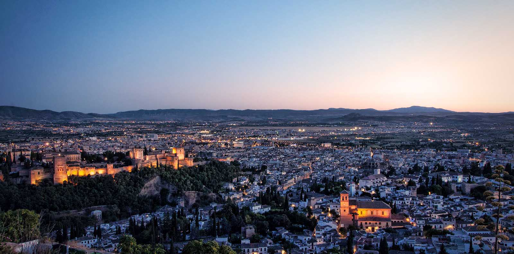

Es el más elevado de los miradores de Granada y desde él se contempla una amplia panorámica de la ciudad, del Albaicín y sus murallas, de la Alhambra y Sierra Nevada. Se accede a él después de una larga y empinada caminata, pero el esfuerzo se ve rápidamente recompensado con las gratificantes vistas.
Está situado ante la Ermita de San Miguel Alto, lugar al que los vecinos del Albaicín peregrinan en romería cada 29 de septiembre para sacar en procesión una imagen del Arcángel San Miguel.
El acceso andando se realiza, bien desde la Placeta Cruz de Piedra, accediendo por el Carril de San Miguel hasta que se acaba, donde tomaremos alguno de los caminos (o por las escaleras) que nos permite ganar altura hasta llegar al mismo. La otra opción de partiendo de la calle San Luis y tras visitar el Mirador de la Cruz de la Rauda ascender por las escaleras hasta que estas finalizan y tomar alguno de los caminos que nos sitúan en el mismo.